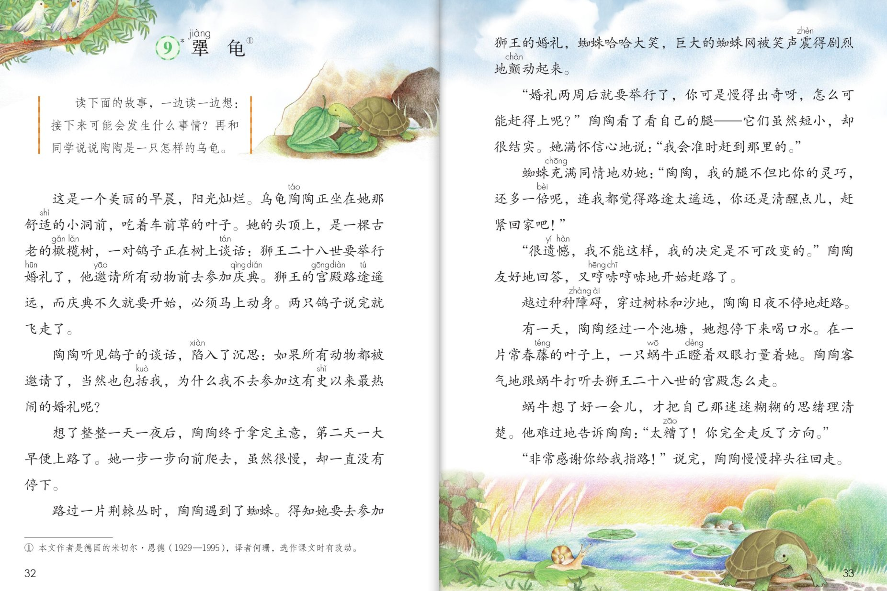
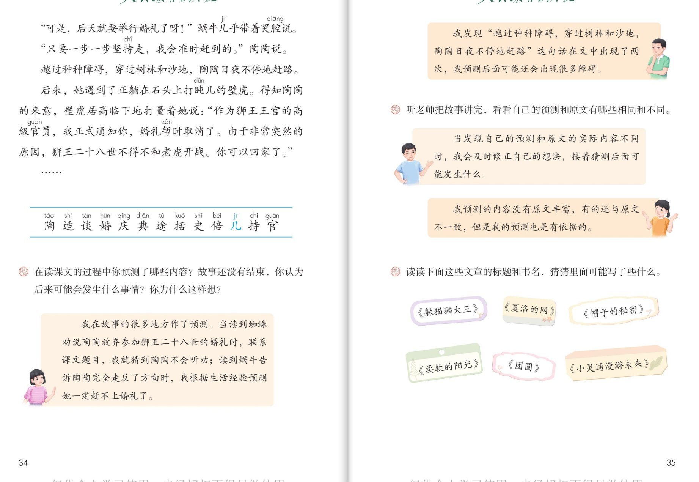

×
🔊 手机听不到声音怎么办？
① 先把手机
媒体音量调大 ，确认没开静音、没连蓝牙耳机；在微信里打开的，点右上角「⋯ → 用浏览器打开」。
② 还是没声音？到应用商店免费下载
Microsoft Edge 浏览器 （它自带朗读发声），用它打开本页面就能出声。
③ 换了 Edge 仍然没声音，说明这部手机的
硬件/系统不支持 网页朗读（多为老旧机型）；近几年买的新手机一般都能正常播放。
→ 打开声音自检
🐢 第 9 课《犟龟》· 有声图文带读
统编版语文 · 第三单元·阅读（略读课） · 课本 P32~35 · 作者：[德国]米切尔·恩德 · 素养升级版（对标 2022 课标第二学段）
课文 15 个自然段
素养目标 4
会认字 13 （略读只认不写）
听写词 12
预测气泡 4 条
深入理解 8 题
本课本领 一边读一边预测
🎧 这样学（可随时点任意一句、一个字、一个词单独听）： ① 听读课文 ——一句一句读，读到哪一句哪一句发光；一边读一边猜：接下来可能会发生什么事情？② 学字词 ——13 个会认字（略读课只要求认读），点一个读一个。③ 词语·听写 ——听写 12 个课文词（读两遍→你写→报答案→听示范句），再听 4 组近义词辨析。④ 深入理解 ——8 道题（认知 / 理解 / 运用 / 拓展），先想后看。⑤ 分角色朗读 ——旁白、陶陶、蜘蛛、蜗牛、壁虎，读出陶陶的坚定。🌟 本课特别任务：课文在省略号处停住了——后来的故事，由你来预测！
📌 本单元语文要素 ——阅读：预测 。单元导语（P27 照录）：猜测与推想，使我们的阅读之旅充满了乐趣 ；要点：了解预测的基本方法并尝试运用 ；尝试续编故事 。略读课 ：生字只要求认读，不要求书写；要自己读，自己想，自己猜。
🀄 文化自信
🀄 文化自信
读外国经典童话《犟龟》，感受坚持不懈、说到做到的美好品格，开阔阅读视野。
🗣 语言运用
🗣 语言运用
认读 13 个生字；积累“满怀信心地、日夜不停地、迷迷糊糊”等词语和描写坚持的句子。
💡 思维能力
💡 思维能力
一边读一边预测：用重复的句式、人物的话语和自己的生活经验作依据，并对照原文验证、修正。
🎨 审美创造
🎨 审美创造
边读边想象陶陶赶路的画面，给故事接着编下去，体验预测和创造的乐趣。
点段前的 ①②③ 听整段
🔁 跟读模式：关
👁 隐藏注音（自测用）
字卡上的拼音标的是本课要认的字，读音来自课本生字表
🎤 朗读要求（老师标准） 不添字、不漏字 ；不出声、不指读 ，一边读一边预测 ；各自的神气 ，陶陶的话读得坚定 ；猜一猜 ，再验证自己的猜测。
📖 略读课导语（照录 P32） ：一边读一边想 ：接下来可能会发生什么事情？再和同学说说陶陶是一只怎样的乌龟 。
🤫 默读小提示（边默读边预测） 听读 ——点句子听老师读；第二步 默读 ——不出声、不指读，读到关键处停下来猜一猜 ：接下来可能会发生什么事情；第三步 验证 ——接着读，猜错了就修正想法 接着猜。
①
这是一个美丽的早晨，阳光灿烂。
乌龟陶陶正坐在她那舒适的小洞前，吃着车前草的叶子。
她的头顶上，是一棵古老的橄榄树，一对鸽子正在树上谈话：
狮王二十八世要举行婚礼了，他邀请所有动物前去参加庆典。
狮王的宫殿路途遥远，而庆典不久就要开始，必须马上动身。
两只鸽子说完就飞走了。
📌 这一段讲：美丽的早晨，鸽子带来狮王婚礼的消息。
②
陶陶听见鸽子的谈话，陷入了沉思：
如果所有动物都被邀请了，当然也包括我，为什么我不去参加这有史以来最热闹的婚礼呢？
📌 这一段讲：陶陶决定：为什么我不去参加婚礼呢。
③
想了整整一天一夜后，陶陶终于拿定主意，第二天一大早便上路了。
她一步一步向前爬去，虽然很慢，却一直没有停下。
📌 这一段讲：陶陶拿定主意，一步一步上路，从不停下。
④
路过一片荆棘丛时，陶陶遇到了蜘蛛。
得知她要去参加狮王的婚礼，蜘蛛哈哈大笑，巨大的蜘蛛网被笑声震得剧烈地颤动起来。
📌 这一段讲：蜘蛛听了哈哈大笑，觉得陶陶不可能赶上。
⑤
“婚礼两周后就要举行了，你是慢得出奇呀，怎么可能赶得上呢？”
陶陶看了看自己的腿——它们虽然短小，却很结实。
她满怀信心地说：“我会准时赶到那里的。”
📌 这一段讲：蜘蛛说慢得出奇，陶陶满怀信心：我会准时赶到。
⑥
蜘蛛充满同情地劝她：
“陶陶，我的腿不但比你的灵巧，还多一倍呢，连我都觉得路途太遥远，你还是清醒点儿，赶紧回家吧！”
📌 这一段讲：蜘蛛好心劝陶陶：赶紧回家吧。
⑦
“很遗憾，我不能这样，我的决定是不可改变的。”
陶陶友好地回答，又哼哼哧哧地开始赶路了。
📌 这一段讲：陶陶不听劝：我的决定是不可改变的。
⑧
越过种种障碍，穿过树林和沙地，陶陶日夜不停地赶路。
📌 这一段讲：陶陶日夜不停地赶路。（这句话出现了两次之一）
⑨
有一天，陶陶经过一个池塘时，想停下来喝口水。
在一片常春藤的叶子上，一只蜗牛正瞪着双眼打量着她。
陶陶客气地跟蜗牛打听去狮王二十八世的宫殿怎么走。
📌 这一段讲：池塘边，陶陶向蜗牛打听宫殿怎么走。
⑩
蜗牛想了好一会儿，才把自己那迷迷糊糊的思绪理清楚。
他难过地告诉陶陶：“太糟了！你完全反了方向。”
📌 这一段讲：蜗牛难过地告诉她：方向完全反了。
⑪
“非常感谢你给我指路！”
说完，陶陶慢慢掉头往回走。
📌 这一段讲：陶陶谢过蜗牛，掉头重新出发。
⑫
“可是，后天就要举行婚礼了呀！”蜗牛几乎带着哭腔说。
“只要一步一步坚持走，我会准时赶到的。”陶陶说。
📌 这一段讲：蜗牛替她着急，陶陶仍坚信：坚持走就能赶到。
⑬
越过种种障碍，穿过树林和沙地，陶陶日夜不停地赶路。
📌 这一段讲：日夜不停地赶路又出现了。（旁批说：后面可能还有很多障碍）
⑭
后来，她遇到了正躺在石头上打盹儿的壁虎。
得知陶陶的来意，壁虎居高临下地打量着说：“作为狮王王宫的高级官员，我正式通知你，婚礼暂时取消了。
由于非常突然的原因，狮王二十八世不得不和老虎开战。
你可以回家了。”
📌 这一段讲：壁虎通知：婚礼取消，可以回家了。
⑮
……
📌 这一段讲：故事在这里停住了——后面会发生什么，由你来预测。
🤔 想一想（点我可跳过）
双页宽图自动占整行

第 32~33 页 · 课文（上）

第 34~35 页 · 课文（下）· 课后练习
📖 人教版《语文》三年级上册 · 课本第 32~35 页 · 图片仅供个人学习，版权归人民教育出版社所有
📚 注释① 本文作者是德国 的米切尔·恩德（1929—1995） ，译者何珊 ，选作课文时有改动。
点一个字，听读音、词语和在课文里的句子
点一行，听读这一组词语
婚 婚礼 婚纱 求婚
途 路途 用途 长途
遥 遥远 遥望 遥控
持 坚持 持续 保持
读两遍 → 你在纸上写 → 报答案 → 听示范句
准备听写 · 共 12 个词
○ ○ ○
点下面的「开始听写」，听到一个词就写一个词。
▶ 开始听写
🔁 再读一遍
👁 看答案
点词听读，点句子听示范句，再自己说一句
1 婚礼 课文词
示范句：狮王二十八世要举行婚礼了。
✏️ 我也能说：谁要举行婚礼。
2 庆典 课文词
示范句：他邀请所有动物前去参加庆典。
✏️ 我也能说：谁去参加庆典。
3 邀请 课文词
示范句：他邀请所有动物前去参加。
✏️ 我也能说：谁邀请谁。
4 宫殿 课文词
示范句：狮王的宫殿路途遥远。
✏️ 我也能说：谁的宫殿怎么样。
5 路途 课文词
示范句：路途遥远，必须马上动身。
✏️ 我也能说：路途怎么样。
6 遥远 课文词
示范句：狮王的宫殿路途遥远。
✏️ 我也能说：什么遥远。
7 遗憾 课文词
示范句：很遗憾，我不能这样。
✏️ 我也能说：谁说很遗憾。
8 障碍 课文词
示范句：越过种种障碍，穿过树林和沙地。
✏️ 我也能说：越过什么。
9 池塘 课文词
示范句：陶陶经过一个池塘时，想停下来喝口水。
✏️ 我也能说：经过什么地方。
10 坚持 课文词
示范句：只要一步一步坚持走，我会准时赶到的。
✏️ 我也能说：谁坚持做什么。
11 方向 课文词
示范句：太糟了，你完全反了方向。
✏️ 我也能说：方向怎么了。
12 结实 课文词
示范句：它们虽然短小，却很结实。
✏️ 我也能说：什么很结实。
相同点 / 不一样在哪 / 各造一句
沉思 — 深思
相同：都表示深深地思考。
不一样：沉思 偏重静静地想（陷入了沉思）；深思 偏重往深处想、反复想。
沉思：陶陶听见了鸽子的谈话，陷入了沉思。
结实 — 坚固
相同：都表示牢固、不容易坏。
不一样：结实 多形容身体、东西（腿很结实）；坚固 多形容建筑、工事。
结实：它们虽然短小，却很结实。
灵巧 — 灵活
相同：都表示不笨拙、反应快。
不一样：灵巧 多形容手、动作巧妙；灵活 多形容身手、脑筋。
灵巧：蜘蛛的腿不但灵巧，还多一倍呢。
迷迷糊糊 — 模模糊糊
相同：都表示不清楚。
不一样：迷迷糊糊 多形容神志、思绪（思绪迷迷糊糊）；模模糊糊 多形容看不清、听不清。
迷迷糊糊：蜗牛把自己那迷迷糊糊的思绪理清楚。
“…地+动词” 满怀信心地说 充满同情地劝 居高临下地打量 日夜不停地赶路
AABB式 迷迷糊糊 日日夜夜 明明白白
故事词语 婚礼 庆典 宫殿 障碍
预测用语 我猜… 我预测… 可能会… 一定是…
页边这位小读者发现了什么？
这一课的页边只有 1 条旁批 ，但它用了和《总也倒不了的老屋》一样的法宝——抓重复的句式 。找一找：课文里哪句话出现了两次？
💭 教材旁批（P35）
我发现“越过种种障碍，穿过树林和沙地，陶陶日夜不停地赶路”这句话在文中出现了两次，我预测后面可能还会出现很多障碍。 ▸ 抓重复的句式预测——和《总也倒不了的老屋》里用的方法一样！
这三位同学是怎么预测的？听听他们的思路
👦 示范气泡一（题②）
我在故事的很多地方作了预测。当读到蜘蛛劝说陶陶放弃参加狮王二十八世的婚礼时，联系课文题目，我就猜到陶陶不会听劝；读到蜗牛告诉陶陶完全走反了方向时，我根据生活经验预测她一定赶不上婚礼了。
👦 示范气泡二（题③）
当发现自己的预测和原文的实际内容不同时，我会及时修正自己的想法，接着猜测后面可能发生什么。
👧 示范气泡三（题③）
我预测的内容没有原文丰富，有的还与原文不一致，但是我的预测也是有依据的。
点一张卡听书名，再说说你的猜测
《熊猫猫大王》
🔮 从书名猜：这位大王是谁？他会做什么了不起的事？
《帽子的秘密》
🔮 一顶帽子里，能藏着什么秘密呢？
《柔软的阳光》
🔮 阳光怎么会是柔软的？这会是一篇什么样的文章？
《团圆》
🔮 谁和谁团圆了？团圆的时候会发生什么？
《小灵通漫游未来》
🔮 小灵通是谁？未来世界会是什么样？
标「答案不唯一」的题，说得有道理都对
认知 略读课的导语给这个单元定了什么任务？（照录 P32 导语框）看解析
🤔 想一想
解析：
读下面的故事，一边读一边想：接下来可能会发生什么事情？再和同学说说陶陶是一只怎样的乌龟。
🌈 答案不唯一，说得有道理都对
认知 故事讲了一件什么事？看解析
🤔 想一想
解析：
乌龟陶陶听了狮王婚礼的消息，下定决心去参加。路上蜘蛛嘲笑、蜗牛说方向反了、壁虎通知婚礼取消，她都一步一步坚持往前走——故事在省略号处停住了，后面会怎样由你来预测。
🌈 答案不唯一，说得有道理都对
理解 陶陶在路上遇到了哪些劝阻？他们是怎么说的？看解析
🤔 想一想
解析：
蜘蛛：你是慢得出奇呀，怎么可能赶得上呢——劝她回家；蜗牛：太糟了，你完全反了方向；壁虎：婚礼暂时取消了，你可以回家了。🌈 说出地点、角色和话就对。
🌈 答案不唯一，说得有道理都对
理解 课文题目“犟龟”的“犟”是什么意思？从哪里看出陶陶“犟”？看解析
🤔 想一想
解析：
犟，就是不听劝、认定了就坚持到底。陶陶面对蜘蛛的嘲笑说：我的决定是不可改变的；方向反了就掉头再走；婚礼取消了还在赶路——处处都犟。🌈 联系课文说出理由就对。
🌈 答案不唯一，说得有道理都对
理解 “越过种种障碍，穿过树林和沙地，陶陶日夜不停地赶路”出现了两次，这样写有什么用？（教材旁批落点）看解析
🤔 想一想
解析：
重复的句式提醒我们：陶陶一路上会遇到很多障碍，第一次是蜘蛛，第二次是蜗牛和壁虎——抓住重复就能预测后面可能还有很多障碍。🌈 答案不唯一。
🌈 答案不唯一，说得有道理都对
运用 读课文的过程中你预测了哪些内容？你为什么这样想？（课后题②）看解析
🤔 想一想
解析：
参考示范气泡：联系课文题目猜到陶陶不会听劝；根据生活经验预测她赶不上婚礼。🌈 说出自己的预测和依据就很好。
🌈 答案不唯一，说得有道理都对
运用 听老师把故事讲完，你的预测和原文有哪些相同和不同？（课后题③）看解析
🤔 想一想
解析：
参考示范气泡：发现预测和原文不同时，及时修正想法，接着猜；预测得没有原文丰富也不要紧，有依据就了不起。🌈 对照后说出相同与不同都对。
🌈 答案不唯一，说得有道理都对
拓展 读下面这些书名，猜猜里面可能写了些什么？（课后题④）看解析
🤔 想一想
解析：
夏洛的网——夏洛是谁，为什么织网；帽子的秘密——帽子里藏着什么；小灵通漫游未来——未来世界什么样。🌈 只要书名能猜出大意、说出理由都对。
🌈 答案不唯一，说得有道理都对
💬 预测支架：出发 （婚礼的消息）→ 蜘蛛劝返 （慢得出奇）→ 蜗牛指错路 （掉头再走）→ 壁虎通知 （婚礼取消）→ 故事没讲完 （……你来接着预测）。每一站都可以停下来猜一猜！
点一个角色，听他（她）的台词
🎭 旁白
这是一个美丽的早晨，阳光灿烂。乌龟陶陶正坐在她那舒适的小洞前，吃着车前草的叶子。 / 她一步一步向前爬去，虽然很慢，却一直没有停下。 / 越过种种障碍，穿过树林和沙地，陶陶日夜不停地赶路。
💬 要读出人物语气 ：陶陶坚定，蜘蛛好笑又同情，蜗牛难过着急，壁虎官腔十足
🎭 陶陶
如果所有动物都被邀请了，当然也包括我，为什么我不去参加这有史以来最热闹的婚礼呢？ / 我会准时赶到那里的。 / 很遗憾，我不能这样，我的决定是不可改变的。 / 只要一步一步坚持走，我会准时赶到的。
💬 要读出人物语气 ：陶陶坚定，蜘蛛好笑又同情，蜗牛难过着急，壁虎官腔十足
🎭 蜘蛛
婚礼两周后就要举行了，你是慢得出奇呀，怎么可能赶得上呢？ / 陶陶，我的腿不但比你的灵巧，还多一倍呢，连我都觉得路途太遥远，你还是清醒点儿，赶紧回家吧！
💬 要读出人物语气 ：陶陶坚定，蜘蛛好笑又同情，蜗牛难过着急，壁虎官腔十足
🎭 蜗牛
太糟了！你完全反了方向。 / 可是，后天就要举行婚礼了呀！
💬 要读出人物语气 ：陶陶坚定，蜘蛛好笑又同情，蜗牛难过着急，壁虎官腔十足
🎭 壁虎
作为狮王王宫的高级官员，我正式通知你，婚礼暂时取消了。由于非常突然的原因，狮王二十八世不得不和老虎开战。你可以回家了。
💬 要读出人物语气 ：陶陶坚定，蜘蛛好笑又同情，蜗牛难过着急，壁虎官腔十足
每题给自己打 1~3 颗星
1. 我能正确认读 13 个会认字（略读课只认不写）。 ☆ ☆ ☆
2. 我能一边读一边预测，说出接下来可能会发生什么。 ☆ ☆ ☆
3. 我能说出自己预测的依据：重复的句式、人物的话、生活经验。 ☆ ☆ ☆
4. 我能听老师把故事讲完，对照自己的预测，猜错了就修正。 ☆ ☆ ☆
5. 我能说说陶陶是一只怎样的乌龟。 ☆ ☆ ☆
✍️ 小练笔 （课后题②照录）：后来可能会发生什么事情 ？你为什么这样想 ？把你的预测写下来，再和同学交流。有没有赶上婚礼 ，也可以想路上还会遇到谁 ——最重要的是写出你的理由 ，预测要有依据。